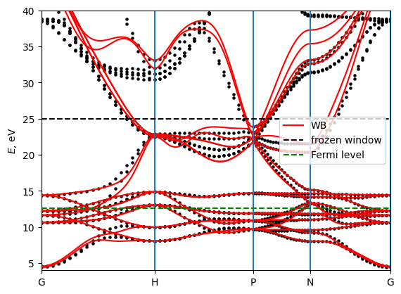
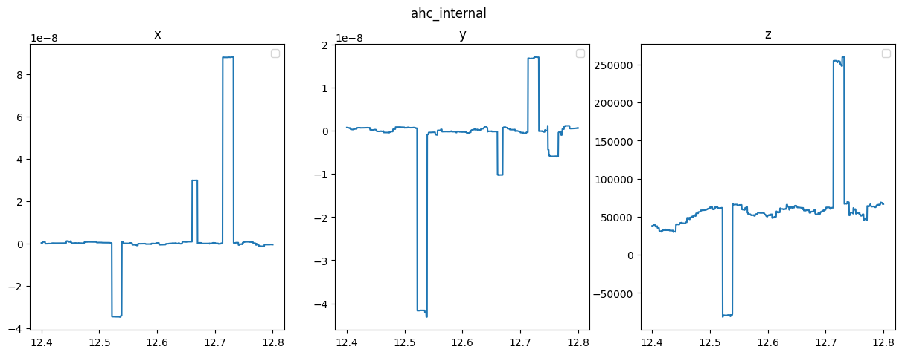
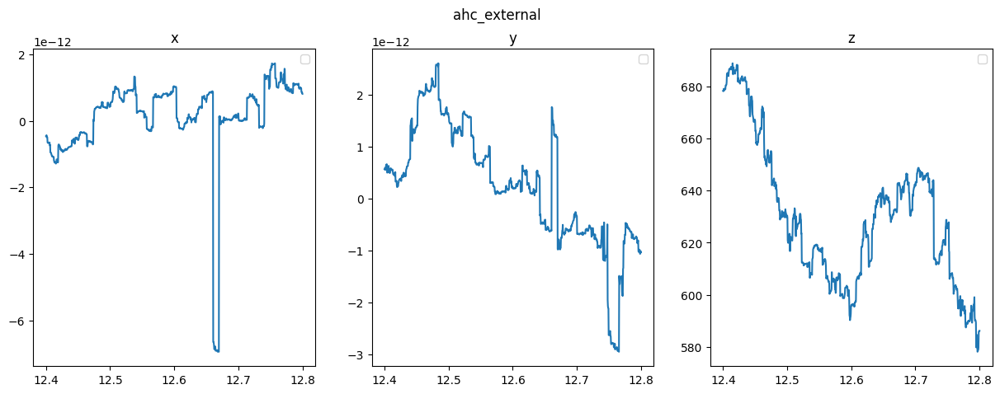
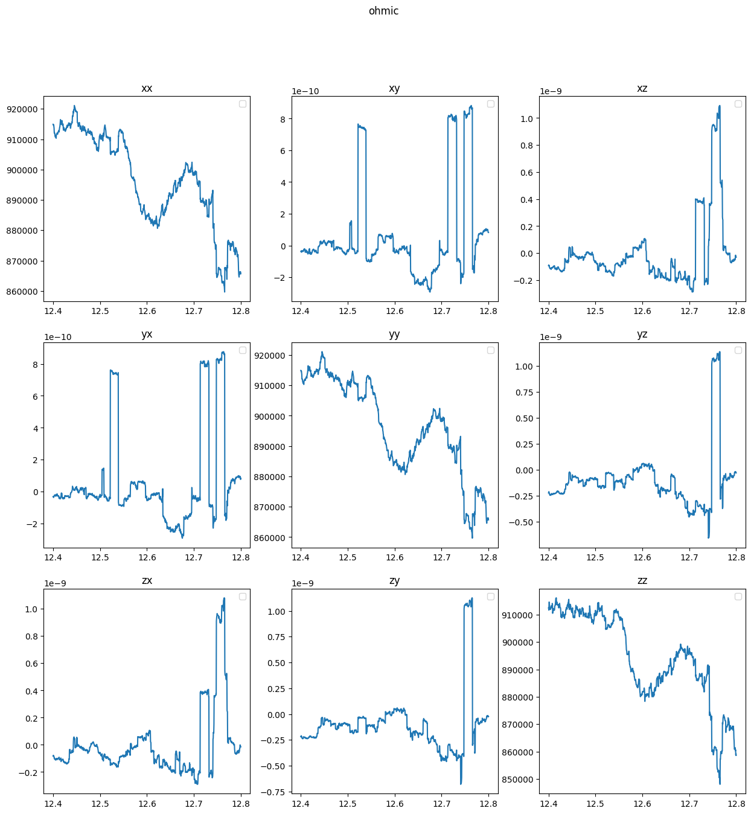

Wannierisation (including SAWF)
This tutorial shows how to construct (Symmetry adapted) Wannier functions with WannierBerri, with magnetic symmetries. We will use the example of bcc Fe.
0. Compute QuantumEspresso files
in tthe tutorial repository only the input files for Quantum ESPRESSO are provided to obtain the necessary files one needs to run
pw.x < Fe_pw_scf_in > Fe_pw_scf_out
pw.x < Fe_pw_nscf_in > Fe_pw_nscf_out
wannier90.x -pp Fe
pw2wannier90.x < Fe_pw2wan_in > Fe_pw2wan_out
1. Setup
First import modules and set up the parallel environment
[13]:
import os
from matplotlib import pyplot as plt
import ray
import scipy
import wannierberri as wberri
import numpy as np
from termcolor import cprint
import warnings
import wannierberri as wb
tested_version = '1.3.0'
if wb.__version__ != tested_version:
warnings.warn(f'This tutorial was tested with version {tested_version} of wannierberri')
from wannierberri.parallel import Parallel
from pathlib import Path
path_data = Path("./pwscf/") # adjust path if needed to point to the data in the tests fo wannier-berri repository
assert os.path.exists(path_data), f"Path {path_data} does not exist"
results_path = {}
results_grid = {}
# We do all calculations for three cases:
# 1. With all magnetic symmetries (include_TR=True)
# 2. With only the spacegroup symmetries that preserve the magnetic order (include_TR=False)
# 3. Without any symmetries (include_TR=None)
include_TR_list = [True, False, None] # None means no symmetry
try:
ray.shutdown()
except:
pass
parallel = Parallel(ray_init={"num_gpus": 0}) # use of gpus is not tested
/tmp/ipykernel_131134/74261731.py:14: UserWarning: This tutorial was tested with version 1.3.0 of wannierberri
warnings.warn(f'This tutorial was tested with version {tested_version} of wannierberri')
initializing ray with {'num_gpus': 0, 'num_cpus': None}
2025-05-14 16:31:15,157 INFO worker.py:1879 -- Started a local Ray instance. View the dashboard at http://127.0.0.1:8265
2. Read the bandstructure from Quantum ESPRESSO
we use the Bnadstructure object form irrep to read the bandstructure from Quantum ESPRESSO. It also can be used to read from VASP, ABINIT, etc. , see documentation of irrep for more details.
[2]:
from irrep.bandstructure import BandStructure
assert os.path.exists(path_data), f"Path {path_data} does not exist"
# adjust path if needed to point to the data in the tests fo wannier-berri repository
bandstructure = BandStructure(code='espresso', # to work with VASP or abinit please refer to the documentation of irrep
prefix=str(path_data / "Fe"),
Ecut=100,
normalize=False,
magmom=[[0,0,1]], # set the magnetic moments for a magnetic system (units do not matter)
include_TR=True) # set include_TR=False if you do not want to include the symmetries involving time reversal
spacegroup = bandstructure.spacegroup
spacegroup.show()
---------- CRYSTAL STRUCTURE ----------
Cell vectors in angstroms:
Vectors of DFT cell | Vectors of REF. cell
a0 = 1.4350 1.4350 1.4350 | a0 = 1.4350 -1.4350 -1.4350
a1 = -1.4350 1.4350 1.4350 | a1 = 1.4350 1.4350 -1.4350
a2 = -1.4350 -1.4350 1.4350 | a2 = 1.4350 1.4350 1.4350
Atomic positions in direct coordinates:
Atom type | Position in DFT cell | Position in REF cell
1 | 0.0000 0.0000 0.0000 | 0.0000 0.0000 0.0000
---------- SPACE GROUP -----------
Space group: I4/mm'm' (# 139.537)
Number of unitary symmetries: 8 (mod. lattice translations)
Number of antiunitary symmetries: 8 (mod. lattice translations)
The transformation from the DFT cell to the reference cell of tables is given by:
| 1.0000 0.0000 0.0000 |
refUC = | 0.0000 1.0000 0.0000 | shiftUC = [0. 0. 0.]
| 0.0000 0.0000 1.0000 |
### 1
rotation : | 1 0 0 |
| 0 1 0 |
| 0 0 1 |
gk = [kx, ky, kz]
spinor rot. : | 1.000+0.000j 0.000+0.000j |
| 0.000+0.000j 1.000+0.000j |
translation : [ 0.0000 0.0000 0.0000 ]
axis: [-0.109397 -0.702863 0.702863] ; angle = 0 , inversion : False, time reversal: False
### 2
rotation : | -1 0 0 |
| 0 -1 0 |
| 0 0 -1 |
gk = [-kx, -ky, -kz]
spinor rot. : | 1.000+0.000j 0.000+0.000j |
| 0.000+0.000j 1.000+0.000j |
translation : [ 0.0000 0.0000 0.0000 ]
axis: [ 0.109397 -0.702863 0.702863] ; angle = 0 , inversion : True, time reversal: False
### 3
rotation : | 0 0 1 |
| 1 0 -1 |
| 0 1 1 |
gk = [kx-ky+kz, kx, ky]
spinor rot. : | 0.707-0.707j 0.000+0.000j |
| 0.000+0.000j 0.707+0.707j |
translation : [ 0.0000 0.0000 0.0000 ]
axis: [-0. 0. 1.] ; angle = 1/2 pi, inversion : False, time reversal: False
### 4
rotation : | 0 0 -1 |
| -1 0 1 |
| 0 -1 -1 |
gk = [-kx+ky-kz, -kx, -ky]
spinor rot. : | 0.707-0.707j 0.000+0.000j |
| 0.000+0.000j 0.707+0.707j |
translation : [ 0.0000 0.0000 0.0000 ]
axis: [-0. 0. 1.] ; angle = 1/2 pi, inversion : True, time reversal: False
### 5
rotation : | 0 1 1 |
| 0 -1 0 |
| 1 1 0 |
gk = [kz, kx-ky+kz, kx]
spinor rot. : | 0.000-1.000j -0.000+0.000j |
| 0.000+0.000j 0.000+1.000j |
translation : [ 0.0000 0.0000 0.0000 ]
axis: [-0. 0. 1.] ; angle = 1 pi, inversion : False, time reversal: False
### 6
rotation : | 0 -1 -1 |
| 0 1 0 |
| -1 -1 0 |
gk = [-kz, -kx+ky-kz, -kx]
spinor rot. : | 0.000+1.000j 0.000-0.000j |
|-0.000-0.000j 0.000-1.000j |
translation : [ 0.0000 0.0000 0.0000 ]
axis: [ 0. -0. -1.] ; angle = 1 pi, inversion : True, time reversal: False
### 7
rotation : | 1 1 0 |
| -1 0 1 |
| 1 0 0 |
gk = [ky, kz, kx-ky+kz]
spinor rot. : | 0.707+0.707j -0.000-0.000j |
| 0.000+0.000j 0.707-0.707j |
translation : [ 0.0000 0.0000 0.0000 ]
axis: [ 0. -0. 1.] ; angle = -1/2 pi, inversion : False, time reversal: False
### 8
rotation : | -1 -1 0 |
| 1 0 -1 |
| -1 0 0 |
gk = [-ky, -kz, -kx+ky-kz]
spinor rot. : | 0.707+0.707j -0.000-0.000j |
| 0.000+0.000j 0.707-0.707j |
translation : [ 0.0000 0.0000 0.0000 ]
axis: [ 0. -0. 1.] ; angle = -1/2 pi, inversion : True, time reversal: False
### 9
rotation : | 0 -1 -1 |
| -1 0 1 |
| 0 0 -1 |
gk = [ky, kx, kx-ky+kz]
spinor rot. : | 0.000+0.000j 0.000-1.000j |
| 0.000-1.000j 0.000+0.000j |
translation : [ 0.0000 0.0000 0.0000 ]
axis: [1. 0. 0.] ; angle = 1 pi, inversion : False, time reversal: True
### 10
rotation : | 0 1 1 |
| 1 0 -1 |
| 0 0 1 |
gk = [-ky, -kx, -kx+ky-kz]
spinor rot. : | 0.000+0.000j 0.000-1.000j |
| 0.000-1.000j 0.000+0.000j |
translation : [ 0.0000 0.0000 0.0000 ]
axis: [1. 0. 0.] ; angle = 1 pi, inversion : True, time reversal: True
### 11
rotation : | -1 -1 0 |
| 0 1 0 |
| 0 -1 -1 |
gk = [kx, kx-ky+kz, kz]
spinor rot. : |-0.000+0.000j -0.707+0.707j |
| 0.707+0.707j 0.000+0.000j |
translation : [ 0.0000 0.0000 0.0000 ]
axis: [-0.707107 0.707107 0. ] ; angle = 1 pi, inversion : False, time reversal: True
### 12
rotation : | 1 1 0 |
| 0 -1 0 |
| 0 1 1 |
gk = [-kx, -kx+ky-kz, -kz]
spinor rot. : |-0.000+0.000j 0.707-0.707j |
|-0.707-0.707j 0.000+0.000j |
translation : [ 0.0000 0.0000 0.0000 ]
axis: [ 0.707107 -0.707107 -0. ] ; angle = 1 pi, inversion : True, time reversal: True
### 13
rotation : | -1 0 0 |
| 1 0 -1 |
| -1 -1 0 |
gk = [kx-ky+kz, kz, ky]
spinor rot. : | 0.000-0.000j 1.000+0.000j |
|-1.000+0.000j 0.000+0.000j |
translation : [ 0.0000 0.0000 0.0000 ]
axis: [-0. -1. 0.] ; angle = 1 pi, inversion : False, time reversal: True
### 14
rotation : | 1 0 0 |
| -1 0 1 |
| 1 1 0 |
gk = [-kx+ky-kz, -kz, -ky]
spinor rot. : | 0.000+0.000j -1.000-0.000j |
| 1.000-0.000j 0.000-0.000j |
translation : [ 0.0000 0.0000 0.0000 ]
axis: [ 0. 1. -0.] ; angle = 1 pi, inversion : True, time reversal: True
### 15
rotation : | 0 0 -1 |
| 0 -1 0 |
| -1 0 0 |
gk = [kz, ky, kx]
spinor rot. : |-0.000+0.000j -0.707-0.707j |
| 0.707-0.707j 0.000+0.000j |
translation : [ 0.0000 0.0000 0.0000 ]
axis: [ 0.707107 0.707107 -0. ] ; angle = 1 pi, inversion : False, time reversal: True
### 16
rotation : | 0 0 1 |
| 0 1 0 |
| 1 0 0 |
gk = [-kz, -ky, -kx]
spinor rot. : |-0.000+0.000j 0.707+0.707j |
|-0.707+0.707j 0.000+0.000j |
translation : [ 0.0000 0.0000 0.0000 ]
axis: [-0.707107 -0.707107 0. ] ; angle = 1 pi, inversion : True, time reversal: True
3 Choose projections
This is similar to wannier90. However, in this case the projections already include the symmetry information.
[3]:
from wannierberri.symmetry.projections import Projection, ProjectionsSet
# now set the transformations of WFs. Make sure, the projections are consistent with the amn file
proj_s = Projection(position_num = [[0,0,0]], orbital='s', spacegroup=spacegroup)
proj_p = Projection(position_num = [[0,0,0]], orbital='p', spacegroup=spacegroup)
proj_d = Projection(position_num = [[0,0,0]], orbital='d', spacegroup=spacegroup)
projections_set = ProjectionsSet(projections=[proj_s, proj_p, proj_d])
4 create the SymmetrizerSAWF object
The wannierberri.symemtry.sawf.SymmetrizerSAWF class is used to store the information on how the dft bands, and the Wannier functions transform under spac-group (ot magnetic group) symmetries. This information is used to construct the SAWF, to search for projections, and to symmetrize the system (using the System_R.symmetrize2 methos)
In spirit it is similar to the dmn file of Wannier90, but more developed and optimized. Compared, to the wannier90.dmn file, the SytmmetrizerSAWF has the following advantages:
The matrices D_wann and d_band are stored in block diagonal form, which saves memory and allows for faster calculations.
for d_band the blocks correspond to (almost) degenerate bands
for D_wann the blocks correspond to the same orbital at the same Wyckoff position
The information on magnetic symmeties (which symmetry operation includes time reversal)
The spacegroup is stored as an irrep.spacegroup.Spacegroup object, which allows for easy manipulation of the symmetry operations
[4]:
symmetrizer = wberri.symmetry.sawf.SymmetrizerSAWF().from_irrep(bandstructure)
symmetrizer.set_D_wann_from_projections(projections_set)
# you can save it for later use
symmetrizer.to_npz("Fe_spd.sawf.npz")
# later can be read with
symmetrizer_read_npz = wberri.symmetry.sawf.SymmetrizerSAWF().from_npz("Fe_spd.sawf.npz")
mpgrid = [4 4 4], 64
orbitals = ['s']
orbitals = ['p']
orbitals = ['d']
calculating Wannier functions for s at [[0 0 0]]
calculating Wannier functions for p at [[0 0 0]]
calculating Wannier functions for d at [[0 0 0]]
D.shape [(13, 16, 2, 2), (13, 16, 6, 6), (13, 16, 10, 10)]
num_wann 18
D_wann_block_indices [[ 0 2]
[ 2 8]
[ 8 18]]
saving to Fe_spd.sawf.npz :
5. Create the amn file
Note, that projections can be calculated directly form bandstructure object, and no need to evaluate them in the pw2wannier90 code. Still, one can use the amn file from pw2wannier90, but in this case one needs to be careful with the ordering of projections. Therefore, it is recommended to generate the amn file directly.
[5]:
from wannierberri.w90files.amn import amn_from_bandstructure
amn = amn_from_bandstructure(bandstructure=bandstructure, projections=projections_set)
finding num points from 3 projections
Creating amn. Using projections_set
ProjectionsSet with 9 Wannier functions and 0 free variables
Projection 0, 0, 0:['s'] with 1 Wannier functions on 1 points (1 per site)
Projection 0, 0, 0:['p'] with 3 Wannier functions on 1 points (3 per site)
Projection 0, 0, 0:['d'] with 5 Wannier functions on 1 points (5 per site)
/home/stepan/github/wannier-berri/wannierberri/symmetry/orbitals.py:256: RuntimeWarning: invalid value encountered in divide
g_costheta = gk[:, 2] / gk_abs
6. Read and set w90 files
Read the files into w90data object, attach to it the created amn and symmetrizer objects.
Then, one may check if the files eig and amn are consistent with the symmetrizer
[6]:
w90data=wberri.w90files.Wannier90data(seedname=str(path_data/"Fe"), readfiles=["mmn","eig","win"])
# check the symmetries of the amn and eig files
w90data.set_symmetrizer(symmetrizer)
w90data.set_file("amn", amn)
print (f"eig is symmetric within the accuracy of : {symmetrizer.check_eig(w90data.eig)}")
print (f"amn is symmetric within the accuracy of : {symmetrizer.check_amn(w90data.amn, warning_precision=1e-4)}")
print (f"eigenvalues at ik=0 : {w90data.eig.data[0]}")
kwargs for mmn are {'read_npz': True, 'write_npz': True}
calling w90 file with pwscf/Fe, mmn, tags=['data', 'neighbours', 'G'], read_npz=True, write_npz=True, kwargs={'npar': 32}
kwargs for eig are {'read_npz': True, 'write_npz': True}
calling w90 file with pwscf/Fe, eig, tags=['data'], read_npz=True, write_npz=True, kwargs={}
kwargs for win are {}
creating empty CheckPoint from Win file
kwargs for amn are {'read_npz': True, 'write_npz': True}
eig is symmetric within the accuracy of : 6.380193857771894e-10
ikirr=11, isym=1 : 0.00012789598633181155
ikirr=11, isym=2 : 0.00013646676080471002
ikirr=11, isym=5 : 0.00013284000713554629
ikirr=11, isym=6 : 0.00012401435135324474
ikirr=11, isym=8 : 0.0001236516753781976
ikirr=11, isym=11 : 0.00012886135751486978
ikirr=11, isym=12 : 0.00013679953944807817
ikirr=11, isym=15 : 0.00013189953253912415
ikirr=12, isym=2 : 0.00012643305087638707
ikirr=12, isym=3 : 0.00012643305087639981
ikirr=12, isym=4 : 0.0001788096787404169
ikirr=12, isym=5 : 0.0001788096787403595
ikirr=12, isym=6 : 0.00012643305092927755
ikirr=12, isym=7 : 0.00012643305092929308
ikirr=12, isym=8 : 0.00017164256537598361
ikirr=12, isym=9 : 0.00017164256537600888
ikirr=12, isym=10 : 0.000156799552679322
ikirr=12, isym=11 : 0.00015679955267931147
amn is symmetric within the accuracy of : 0.0001788096787404169
eigenvalues at ik=0 : [ 4.42624609 4.56711725 10.59844101 10.62588822 10.65695316 11.64267206
11.654173 12.2136333 12.23125238 12.26425051 14.39895102 14.40059647
38.53322082 38.53322147 38.53328964 38.8336636 38.83366485 38.83383108
44.30739027 44.36770869 44.44003016 44.57458079 44.57556868 44.62903705
44.62936834 45.32707513 45.39326779 45.45218324 50.41547735 50.43472702
50.45476162 50.76954857]
7. Wannierise
[7]:
cprint (f"wannierising", "blue", attrs=["bold"])
#aidata.apply_outer_window(win_min=-8,win_max= 100 )
froz_max=25
w90data.wannierise( init = "amn",
froz_min=4,
froz_max=froz_max,
print_progress_every=1,
num_iter=31,
conv_tol=1e-6,
mix_ratio_z=1.0,
localise=True,
sitesym=True,
)
wannierising
####################################################################################################
starting WFs
----------------------------------------------------------------------------------------------------
wannier centers and spreads
----------------------------------------------------------------------------------------------------
0.000000000000 0.000000000000 0.000000000000 | 1.889432851205
0.000000000000 0.000000000000 0.000000000000 | 1.850936215251
0.000000000000 0.000000000000 0.000000000000 | 4.072628643562
0.000000000000 0.000000000000 0.000000000000 | 3.541038965148
0.000000000000 0.000000000000 0.000000000000 | 3.793181855849
0.000000000000 0.000000000000 0.000000000000 | 3.529475313040
0.000000000000 0.000000000000 0.000000000000 | 3.793181855849
0.000000000000 0.000000000000 0.000000000000 | 3.529475313040
0.000000000000 0.000000000000 0.000000000000 | 0.569793195241
0.000000000000 0.000000000000 0.000000000000 | 0.494145557245
0.000000000000 0.000000000000 0.000000000000 | 0.753778729876
0.000000000000 0.000000000000 0.000000000000 | 0.521900384316
0.000000000000 0.000000000000 0.000000000000 | 0.753778729876
0.000000000000 0.000000000000 0.000000000000 | 0.521900384316
0.000000000000 0.000000000000 0.000000000000 | 0.571286073184
0.000000000000 0.000000000000 0.000000000000 | 0.494254545424
0.000000000000 0.000000000000 0.000000000000 | 0.728818216568
0.000000000000 0.000000000000 0.000000000000 | 0.519155677966
----------------------------------------------------------------------------------------------------
0.000000000000 0.000000000000 0.000000000000 | 31.928162506956 <- sum
maximal spread = 4.072628643562
####################################################################################################
####################################################################################################
Iteration 0 (from wannierizer)
----------------------------------------------------------------------------------------------------
wannier centers and spreads
----------------------------------------------------------------------------------------------------
0.000000000000 0.000000000000 0.000000000000 | 1.936268260124
0.000000000000 0.000000000000 0.000000000000 | 2.367185252233
0.000000000000 0.000000000000 0.000000000000 | 2.976938915385
0.000000000000 0.000000000000 0.000000000000 | 2.445128494608
0.000000000000 0.000000000000 0.000000000000 | 2.632761365263
0.000000000000 0.000000000000 0.000000000000 | 2.416157291168
0.000000000000 0.000000000000 0.000000000000 | 2.632761365263
0.000000000000 0.000000000000 0.000000000000 | 2.416157291168
0.000000000000 0.000000000000 0.000000000000 | 0.535601475391
0.000000000000 0.000000000000 0.000000000000 | 0.472303647696
0.000000000000 0.000000000000 0.000000000000 | 0.615772445680
0.000000000000 0.000000000000 0.000000000000 | 0.475291019771
0.000000000000 0.000000000000 0.000000000000 | 0.615772445680
0.000000000000 0.000000000000 0.000000000000 | 0.475291019771
0.000000000000 0.000000000000 0.000000000000 | 0.536459861315
0.000000000000 0.000000000000 0.000000000000 | 0.472324347107
0.000000000000 0.000000000000 0.000000000000 | 0.604667757123
0.000000000000 0.000000000000 0.000000000000 | 0.473834904757
----------------------------------------------------------------------------------------------------
0.000000000000 0.000000000000 0.000000000000 | 25.100677159503 <- sum
maximal spread = 2.976938915385
standard deviation = 0.0
####################################################################################################
####################################################################################################
Iteration 1 (from wannierizer)
----------------------------------------------------------------------------------------------------
wannier centers and spreads
----------------------------------------------------------------------------------------------------
0.000000000000 0.000000000000 0.000000000000 | 1.476370474732
0.000000000000 0.000000000000 0.000000000000 | 1.635230071590
0.000000000000 0.000000000000 0.000000000000 | 1.583164921829
0.000000000000 0.000000000000 0.000000000000 | 1.621633511077
0.000000000000 0.000000000000 0.000000000000 | 1.585049580771
0.000000000000 0.000000000000 0.000000000000 | 1.624212980090
0.000000000000 0.000000000000 0.000000000000 | 1.585049580771
0.000000000000 0.000000000000 0.000000000000 | 1.624212980090
0.000000000000 0.000000000000 0.000000000000 | 0.494894536965
0.000000000000 0.000000000000 0.000000000000 | 0.443368684868
0.000000000000 0.000000000000 0.000000000000 | 0.458666435846
0.000000000000 0.000000000000 0.000000000000 | 0.405658640518
0.000000000000 0.000000000000 0.000000000000 | 0.458666435846
0.000000000000 0.000000000000 0.000000000000 | 0.405658640518
0.000000000000 0.000000000000 0.000000000000 | 0.495044604428
0.000000000000 0.000000000000 0.000000000000 | 0.443521830661
0.000000000000 0.000000000000 0.000000000000 | 0.458296747296
0.000000000000 0.000000000000 0.000000000000 | 0.405596596375
----------------------------------------------------------------------------------------------------
0.000000000000 0.000000000000 0.000000000000 | 17.204297254271 <- sum
maximal spread = 1.635230071590
standard deviation = 0.6968869967781423
####################################################################################################
####################################################################################################
Iteration 2 (from wannierizer)
----------------------------------------------------------------------------------------------------
wannier centers and spreads
----------------------------------------------------------------------------------------------------
0.000000000000 0.000000000000 0.000000000000 | 1.347830431289
0.000000000000 0.000000000000 0.000000000000 | 1.465966551057
0.000000000000 0.000000000000 0.000000000000 | 1.447055570163
0.000000000000 0.000000000000 0.000000000000 | 1.527738335463
0.000000000000 0.000000000000 0.000000000000 | 1.446906786430
0.000000000000 0.000000000000 0.000000000000 | 1.527202992843
0.000000000000 0.000000000000 0.000000000000 | 1.446906786430
0.000000000000 0.000000000000 0.000000000000 | 1.527202992843
0.000000000000 0.000000000000 0.000000000000 | 0.487744952052
0.000000000000 0.000000000000 0.000000000000 | 0.436199533050
0.000000000000 0.000000000000 0.000000000000 | 0.439473958106
0.000000000000 0.000000000000 0.000000000000 | 0.400377087571
0.000000000000 0.000000000000 0.000000000000 | 0.439473958106
0.000000000000 0.000000000000 0.000000000000 | 0.400377087571
0.000000000000 0.000000000000 0.000000000000 | 0.487795521964
0.000000000000 0.000000000000 0.000000000000 | 0.436245370249
0.000000000000 0.000000000000 0.000000000000 | 0.439532778875
0.000000000000 0.000000000000 0.000000000000 | 0.400351098272
----------------------------------------------------------------------------------------------------
0.000000000000 0.000000000000 0.000000000000 | 16.104381792336 <- sum
maximal spread = 1.527738335463
standard deviation = 0.6913493047588598
####################################################################################################
####################################################################################################
Iteration 3 (from wannierizer)
----------------------------------------------------------------------------------------------------
wannier centers and spreads
----------------------------------------------------------------------------------------------------
0.000000000000 0.000000000000 0.000000000000 | 1.332044631962
0.000000000000 0.000000000000 0.000000000000 | 1.423895604622
0.000000000000 0.000000000000 0.000000000000 | 1.408334240837
0.000000000000 0.000000000000 0.000000000000 | 1.503950444409
0.000000000000 0.000000000000 0.000000000000 | 1.408106366813
0.000000000000 0.000000000000 0.000000000000 | 1.503673522424
0.000000000000 0.000000000000 0.000000000000 | 1.408106366813
0.000000000000 0.000000000000 0.000000000000 | 1.503673522424
0.000000000000 0.000000000000 0.000000000000 | 0.484912711472
0.000000000000 0.000000000000 0.000000000000 | 0.434750914424
0.000000000000 0.000000000000 0.000000000000 | 0.432653330640
0.000000000000 0.000000000000 0.000000000000 | 0.399106069402
0.000000000000 0.000000000000 0.000000000000 | 0.432653330640
0.000000000000 0.000000000000 0.000000000000 | 0.399106069402
0.000000000000 0.000000000000 0.000000000000 | 0.484948519215
0.000000000000 0.000000000000 0.000000000000 | 0.434777341152
0.000000000000 0.000000000000 0.000000000000 | 0.432719896262
0.000000000000 0.000000000000 0.000000000000 | 0.399092895417
----------------------------------------------------------------------------------------------------
0.000000000000 0.000000000000 0.000000000000 | 15.826505778332 <- sum
maximal spread = 1.503950444409
standard deviation = 0.09133720237912861
####################################################################################################
####################################################################################################
Iteration 4 (from wannierizer)
----------------------------------------------------------------------------------------------------
wannier centers and spreads
----------------------------------------------------------------------------------------------------
0.000000000000 0.000000000000 0.000000000000 | 1.334426844892
0.000000000000 0.000000000000 0.000000000000 | 1.409726812344
0.000000000000 0.000000000000 0.000000000000 | 1.396278488158
0.000000000000 0.000000000000 0.000000000000 | 1.498145957014
0.000000000000 0.000000000000 0.000000000000 | 1.396097036928
0.000000000000 0.000000000000 0.000000000000 | 1.497846350835
0.000000000000 0.000000000000 0.000000000000 | 1.396097036928
0.000000000000 0.000000000000 0.000000000000 | 1.497846350835
0.000000000000 0.000000000000 0.000000000000 | 0.483666927908
0.000000000000 0.000000000000 0.000000000000 | 0.434558463523
0.000000000000 0.000000000000 0.000000000000 | 0.429496422670
0.000000000000 0.000000000000 0.000000000000 | 0.398665796752
0.000000000000 0.000000000000 0.000000000000 | 0.429496422670
0.000000000000 0.000000000000 0.000000000000 | 0.398665796752
0.000000000000 0.000000000000 0.000000000000 | 0.483692522000
0.000000000000 0.000000000000 0.000000000000 | 0.434577675780
0.000000000000 0.000000000000 0.000000000000 | 0.429548043720
0.000000000000 0.000000000000 0.000000000000 | 0.398652483495
----------------------------------------------------------------------------------------------------
0.000000000000 0.000000000000 0.000000000000 | 15.747485433202 <- sum
maximal spread = 1.498145957014
standard deviation = 0.02388311216243117
####################################################################################################
####################################################################################################
Iteration 5 (from wannierizer)
----------------------------------------------------------------------------------------------------
wannier centers and spreads
----------------------------------------------------------------------------------------------------
0.000000000000 0.000000000000 0.000000000000 | 1.339352752741
0.000000000000 0.000000000000 0.000000000000 | 1.404359332131
0.000000000000 0.000000000000 0.000000000000 | 1.392931216195
0.000000000000 0.000000000000 0.000000000000 | 1.496991940761
0.000000000000 0.000000000000 0.000000000000 | 1.392782732288
0.000000000000 0.000000000000 0.000000000000 | 1.496812534816
0.000000000000 0.000000000000 0.000000000000 | 1.392782732288
0.000000000000 0.000000000000 0.000000000000 | 1.496812534816
0.000000000000 0.000000000000 0.000000000000 | 0.483060873002
0.000000000000 0.000000000000 0.000000000000 | 0.434588900053
0.000000000000 0.000000000000 0.000000000000 | 0.427977260423
0.000000000000 0.000000000000 0.000000000000 | 0.398539830652
0.000000000000 0.000000000000 0.000000000000 | 0.427977260423
0.000000000000 0.000000000000 0.000000000000 | 0.398539830652
0.000000000000 0.000000000000 0.000000000000 | 0.483086871580
0.000000000000 0.000000000000 0.000000000000 | 0.434603351948
0.000000000000 0.000000000000 0.000000000000 | 0.428006837829
0.000000000000 0.000000000000 0.000000000000 | 0.398531006300
----------------------------------------------------------------------------------------------------
0.000000000000 0.000000000000 0.000000000000 | 15.727737798898 <- sum
maximal spread = 1.496991940761
standard deviation = 0.008241025160709394
####################################################################################################
####################################################################################################
Iteration 6 (from wannierizer)
----------------------------------------------------------------------------------------------------
wannier centers and spreads
----------------------------------------------------------------------------------------------------
0.000000000000 0.000000000000 0.000000000000 | 1.343598834211
0.000000000000 0.000000000000 0.000000000000 | 1.402182643237
0.000000000000 0.000000000000 0.000000000000 | 1.392286322774
0.000000000000 0.000000000000 0.000000000000 | 1.496972553023
0.000000000000 0.000000000000 0.000000000000 | 1.392171932567
0.000000000000 0.000000000000 0.000000000000 | 1.496834268669
0.000000000000 0.000000000000 0.000000000000 | 1.392171932567
0.000000000000 0.000000000000 0.000000000000 | 1.496834268669
0.000000000000 0.000000000000 0.000000000000 | 0.482734253331
0.000000000000 0.000000000000 0.000000000000 | 0.434638999385
0.000000000000 0.000000000000 0.000000000000 | 0.427246251973
0.000000000000 0.000000000000 0.000000000000 | 0.398543686276
0.000000000000 0.000000000000 0.000000000000 | 0.427246251973
0.000000000000 0.000000000000 0.000000000000 | 0.398543686276
0.000000000000 0.000000000000 0.000000000000 | 0.482761479051
0.000000000000 0.000000000000 0.000000000000 | 0.434650160817
0.000000000000 0.000000000000 0.000000000000 | 0.427258061379
0.000000000000 0.000000000000 0.000000000000 | 0.398538816863
----------------------------------------------------------------------------------------------------
0.000000000000 0.000000000000 0.000000000000 | 15.725214403042 <- sum
maximal spread = 1.496972553023
standard deviation = 0.0037478759027480112
####################################################################################################
####################################################################################################
Iteration 7 (from wannierizer)
----------------------------------------------------------------------------------------------------
wannier centers and spreads
----------------------------------------------------------------------------------------------------
0.000000000000 0.000000000000 0.000000000000 | 1.346730968071
0.000000000000 0.000000000000 0.000000000000 | 1.401238522828
0.000000000000 0.000000000000 0.000000000000 | 1.392399124885
0.000000000000 0.000000000000 0.000000000000 | 1.497123499252
0.000000000000 0.000000000000 0.000000000000 | 1.392307099785
0.000000000000 0.000000000000 0.000000000000 | 1.497011091084
0.000000000000 0.000000000000 0.000000000000 | 1.392307099785
0.000000000000 0.000000000000 0.000000000000 | 1.497011091084
0.000000000000 0.000000000000 0.000000000000 | 0.482540040873
0.000000000000 0.000000000000 0.000000000000 | 0.434671244444
0.000000000000 0.000000000000 0.000000000000 | 0.426904402008
0.000000000000 0.000000000000 0.000000000000 | 0.398588880854
0.000000000000 0.000000000000 0.000000000000 | 0.426904402008
0.000000000000 0.000000000000 0.000000000000 | 0.398588880854
0.000000000000 0.000000000000 0.000000000000 | 0.482568439198
0.000000000000 0.000000000000 0.000000000000 | 0.434679635212
0.000000000000 0.000000000000 0.000000000000 | 0.426903229534
0.000000000000 0.000000000000 0.000000000000 | 0.398588018520
----------------------------------------------------------------------------------------------------
0.000000000000 0.000000000000 0.000000000000 | 15.727065670279 <- sum
maximal spread = 1.497123499252
standard deviation = 0.0030235654418606732
####################################################################################################
####################################################################################################
Iteration 8 (from wannierizer)
----------------------------------------------------------------------------------------------------
wannier centers and spreads
----------------------------------------------------------------------------------------------------
0.000000000000 0.000000000000 0.000000000000 | 1.348908769902
0.000000000000 0.000000000000 0.000000000000 | 1.400805502995
0.000000000000 0.000000000000 0.000000000000 | 1.392651739496
0.000000000000 0.000000000000 0.000000000000 | 1.497252091043
0.000000000000 0.000000000000 0.000000000000 | 1.392574516598
0.000000000000 0.000000000000 0.000000000000 | 1.497143818623
0.000000000000 0.000000000000 0.000000000000 | 1.392574516598
0.000000000000 0.000000000000 0.000000000000 | 1.497143818623
0.000000000000 0.000000000000 0.000000000000 | 0.482417285476
0.000000000000 0.000000000000 0.000000000000 | 0.434688702525
0.000000000000 0.000000000000 0.000000000000 | 0.426751135497
0.000000000000 0.000000000000 0.000000000000 | 0.398639840585
0.000000000000 0.000000000000 0.000000000000 | 0.426751135497
0.000000000000 0.000000000000 0.000000000000 | 0.398639840585
0.000000000000 0.000000000000 0.000000000000 | 0.482446444965
0.000000000000 0.000000000000 0.000000000000 | 0.434695023997
0.000000000000 0.000000000000 0.000000000000 | 0.426740909791
0.000000000000 0.000000000000 0.000000000000 | 0.398642225096
----------------------------------------------------------------------------------------------------
0.000000000000 0.000000000000 0.000000000000 | 15.729467317890 <- sum
maximal spread = 1.497252091043
standard deviation = 0.0021794112450441295
####################################################################################################
####################################################################################################
Iteration 9 (from wannierizer)
----------------------------------------------------------------------------------------------------
wannier centers and spreads
----------------------------------------------------------------------------------------------------
0.000000000000 0.000000000000 0.000000000000 | 1.350381443190
0.000000000000 0.000000000000 0.000000000000 | 1.400596472207
0.000000000000 0.000000000000 0.000000000000 | 1.392874788799
0.000000000000 0.000000000000 0.000000000000 | 1.497333539942
0.000000000000 0.000000000000 0.000000000000 | 1.392806226082
0.000000000000 0.000000000000 0.000000000000 | 1.497221022256
0.000000000000 0.000000000000 0.000000000000 | 1.392806226082
0.000000000000 0.000000000000 0.000000000000 | 1.497221022256
0.000000000000 0.000000000000 0.000000000000 | 0.482337233494
0.000000000000 0.000000000000 0.000000000000 | 0.434697272956
0.000000000000 0.000000000000 0.000000000000 | 0.426687465596
0.000000000000 0.000000000000 0.000000000000 | 0.398683315150
0.000000000000 0.000000000000 0.000000000000 | 0.426687465596
0.000000000000 0.000000000000 0.000000000000 | 0.398683315150
0.000000000000 0.000000000000 0.000000000000 | 0.482366880995
0.000000000000 0.000000000000 0.000000000000 | 0.434701998967
0.000000000000 0.000000000000 0.000000000000 | 0.426670891841
0.000000000000 0.000000000000 0.000000000000 | 0.398688252318
----------------------------------------------------------------------------------------------------
0.000000000000 0.000000000000 0.000000000000 | 15.731444832877 <- sum
maximal spread = 1.497333539942
standard deviation = 0.0014995390409527156
####################################################################################################
####################################################################################################
Iteration 10 (from wannierizer)
----------------------------------------------------------------------------------------------------
wannier centers and spreads
----------------------------------------------------------------------------------------------------
0.000000000000 0.000000000000 0.000000000000 | 1.351360704925
0.000000000000 0.000000000000 0.000000000000 | 1.400490551904
0.000000000000 0.000000000000 0.000000000000 | 1.393037364843
0.000000000000 0.000000000000 0.000000000000 | 1.497381814051
0.000000000000 0.000000000000 0.000000000000 | 1.392973501246
0.000000000000 0.000000000000 0.000000000000 | 1.497259901561
0.000000000000 0.000000000000 0.000000000000 | 1.392973501246
0.000000000000 0.000000000000 0.000000000000 | 1.497259901561
0.000000000000 0.000000000000 0.000000000000 | 0.482284428350
0.000000000000 0.000000000000 0.000000000000 | 0.434701280513
0.000000000000 0.000000000000 0.000000000000 | 0.426664818685
0.000000000000 0.000000000000 0.000000000000 | 0.398716493656
0.000000000000 0.000000000000 0.000000000000 | 0.426664818685
0.000000000000 0.000000000000 0.000000000000 | 0.398716493656
0.000000000000 0.000000000000 0.000000000000 | 0.482314387380
0.000000000000 0.000000000000 0.000000000000 | 0.434704812522
0.000000000000 0.000000000000 0.000000000000 | 0.426643724907
0.000000000000 0.000000000000 0.000000000000 | 0.398723318922
----------------------------------------------------------------------------------------------------
0.000000000000 0.000000000000 0.000000000000 | 15.732871818612 <- sum
maximal spread = 1.497381814051
standard deviation = 0.0010077315293132115
####################################################################################################
####################################################################################################
Iteration 11 (from wannierizer)
----------------------------------------------------------------------------------------------------
wannier centers and spreads
----------------------------------------------------------------------------------------------------
0.000000000000 0.000000000000 0.000000000000 | 1.352004792590
0.000000000000 0.000000000000 0.000000000000 | 1.400434289778
0.000000000000 0.000000000000 0.000000000000 | 1.393147335761
0.000000000000 0.000000000000 0.000000000000 | 1.497410128014
0.000000000000 0.000000000000 0.000000000000 | 1.393085544110
0.000000000000 0.000000000000 0.000000000000 | 1.497277218504
0.000000000000 0.000000000000 0.000000000000 | 1.393085544110
0.000000000000 0.000000000000 0.000000000000 | 1.497277218504
0.000000000000 0.000000000000 0.000000000000 | 0.482249521183
0.000000000000 0.000000000000 0.000000000000 | 0.434703077146
0.000000000000 0.000000000000 0.000000000000 | 0.426659972160
0.000000000000 0.000000000000 0.000000000000 | 0.398740310600
0.000000000000 0.000000000000 0.000000000000 | 0.426659972160
0.000000000000 0.000000000000 0.000000000000 | 0.398740310600
0.000000000000 0.000000000000 0.000000000000 | 0.482279690017
0.000000000000 0.000000000000 0.000000000000 | 0.434705702300
0.000000000000 0.000000000000 0.000000000000 | 0.426635580015
0.000000000000 0.000000000000 0.000000000000 | 0.398748498245
----------------------------------------------------------------------------------------------------
0.000000000000 0.000000000000 0.000000000000 | 15.733844705798 <- sum
maximal spread = 1.497410128014
standard deviation = 0.0006674217176664277
####################################################################################################
####################################################################################################
Iteration 12 (from wannierizer)
----------------------------------------------------------------------------------------------------
wannier centers and spreads
----------------------------------------------------------------------------------------------------
0.000000000000 0.000000000000 0.000000000000 | 1.352425093149
0.000000000000 0.000000000000 0.000000000000 | 1.400402999820
0.000000000000 0.000000000000 0.000000000000 | 1.393219209921
0.000000000000 0.000000000000 0.000000000000 | 1.497427458162
0.000000000000 0.000000000000 0.000000000000 | 1.393157854555
0.000000000000 0.000000000000 0.000000000000 | 1.497283383401
0.000000000000 0.000000000000 0.000000000000 | 1.393157854555
0.000000000000 0.000000000000 0.000000000000 | 1.497283383401
0.000000000000 0.000000000000 0.000000000000 | 0.482226492927
0.000000000000 0.000000000000 0.000000000000 | 0.434703860833
0.000000000000 0.000000000000 0.000000000000 | 0.426662083962
0.000000000000 0.000000000000 0.000000000000 | 0.398756792722
0.000000000000 0.000000000000 0.000000000000 | 0.426662083962
0.000000000000 0.000000000000 0.000000000000 | 0.398756792722
0.000000000000 0.000000000000 0.000000000000 | 0.482256810174
0.000000000000 0.000000000000 0.000000000000 | 0.434705797796
0.000000000000 0.000000000000 0.000000000000 | 0.426635227392
0.000000000000 0.000000000000 0.000000000000 | 0.398765938843
----------------------------------------------------------------------------------------------------
0.000000000000 0.000000000000 0.000000000000 | 15.734489118297 <- sum
maximal spread = 1.497427458162
standard deviation = 0.00043772438981057657
####################################################################################################
####################################################################################################
Iteration 13 (from wannierizer)
----------------------------------------------------------------------------------------------------
wannier centers and spreads
----------------------------------------------------------------------------------------------------
0.000000000000 0.000000000000 0.000000000000 | 1.352697775164
0.000000000000 0.000000000000 0.000000000000 | 1.400384862115
0.000000000000 0.000000000000 0.000000000000 | 1.393265480340
0.000000000000 0.000000000000 0.000000000000 | 1.497438769291
0.000000000000 0.000000000000 0.000000000000 | 1.393203562484
0.000000000000 0.000000000000 0.000000000000 | 1.497284268876
0.000000000000 0.000000000000 0.000000000000 | 1.393203562484
0.000000000000 0.000000000000 0.000000000000 | 1.497284268876
0.000000000000 0.000000000000 0.000000000000 | 0.482211352387
0.000000000000 0.000000000000 0.000000000000 | 0.434704199668
0.000000000000 0.000000000000 0.000000000000 | 0.426666311687
0.000000000000 0.000000000000 0.000000000000 | 0.398767926156
0.000000000000 0.000000000000 0.000000000000 | 0.426666311687
0.000000000000 0.000000000000 0.000000000000 | 0.398767926156
0.000000000000 0.000000000000 0.000000000000 | 0.482241779565
0.000000000000 0.000000000000 0.000000000000 | 0.434705609000
0.000000000000 0.000000000000 0.000000000000 | 0.426637572829
0.000000000000 0.000000000000 0.000000000000 | 0.398777735838
----------------------------------------------------------------------------------------------------
0.000000000000 0.000000000000 0.000000000000 | 15.734909274602 <- sum
maximal spread = 1.497438769291
standard deviation = 0.000285040521238145
####################################################################################################
####################################################################################################
Iteration 14 (from wannierizer)
----------------------------------------------------------------------------------------------------
wannier centers and spreads
----------------------------------------------------------------------------------------------------
0.000000000000 0.000000000000 0.000000000000 | 1.352873909631
0.000000000000 0.000000000000 0.000000000000 | 1.400373975847
0.000000000000 0.000000000000 0.000000000000 | 1.393295137277
0.000000000000 0.000000000000 0.000000000000 | 1.497446736107
0.000000000000 0.000000000000 0.000000000000 | 1.393232082840
0.000000000000 0.000000000000 0.000000000000 | 1.497282896090
0.000000000000 0.000000000000 0.000000000000 | 1.393232082840
0.000000000000 0.000000000000 0.000000000000 | 1.497282896090
0.000000000000 0.000000000000 0.000000000000 | 0.482201433146
0.000000000000 0.000000000000 0.000000000000 | 0.434704352812
0.000000000000 0.000000000000 0.000000000000 | 0.426670639663
0.000000000000 0.000000000000 0.000000000000 | 0.398775323581
0.000000000000 0.000000000000 0.000000000000 | 0.426670639663
0.000000000000 0.000000000000 0.000000000000 | 0.398775323581
0.000000000000 0.000000000000 0.000000000000 | 0.482231944315
0.000000000000 0.000000000000 0.000000000000 | 0.434705355457
0.000000000000 0.000000000000 0.000000000000 | 0.426640436243
0.000000000000 0.000000000000 0.000000000000 | 0.398785586018
----------------------------------------------------------------------------------------------------
0.000000000000 0.000000000000 0.000000000000 | 15.735180751205 <- sum
maximal spread = 1.497446736107
standard deviation = 0.00018463629896806858
####################################################################################################
####################################################################################################
Iteration 15 (from wannierizer)
----------------------------------------------------------------------------------------------------
wannier centers and spreads
----------------------------------------------------------------------------------------------------
0.000000000000 0.000000000000 0.000000000000 | 1.352987301982
0.000000000000 0.000000000000 0.000000000000 | 1.400367269795
0.000000000000 0.000000000000 0.000000000000 | 1.393314198358
0.000000000000 0.000000000000 0.000000000000 | 1.497452727023
0.000000000000 0.000000000000 0.000000000000 | 1.393249706062
0.000000000000 0.000000000000 0.000000000000 | 1.497280752635
0.000000000000 0.000000000000 0.000000000000 | 1.393249706062
0.000000000000 0.000000000000 0.000000000000 | 1.497280752635
0.000000000000 0.000000000000 0.000000000000 | 0.482194955274
0.000000000000 0.000000000000 0.000000000000 | 0.434704432692
0.000000000000 0.000000000000 0.000000000000 | 0.426674347934
0.000000000000 0.000000000000 0.000000000000 | 0.398780180948
0.000000000000 0.000000000000 0.000000000000 | 0.426674347934
0.000000000000 0.000000000000 0.000000000000 | 0.398780180948
0.000000000000 0.000000000000 0.000000000000 | 0.482225531854
0.000000000000 0.000000000000 0.000000000000 | 0.434705119504
0.000000000000 0.000000000000 0.000000000000 | 0.426642987233
0.000000000000 0.000000000000 0.000000000000 | 0.398790748559
----------------------------------------------------------------------------------------------------
0.000000000000 0.000000000000 0.000000000000 | 15.735355247431 <- sum
maximal spread = 1.497452727023
standard deviation = 0.00011912036612177644
####################################################################################################
####################################################################################################
Iteration 16 (from wannierizer)
----------------------------------------------------------------------------------------------------
wannier centers and spreads
----------------------------------------------------------------------------------------------------
0.000000000000 0.000000000000 0.000000000000 | 1.353060115701
0.000000000000 0.000000000000 0.000000000000 | 1.400363067577
0.000000000000 0.000000000000 0.000000000000 | 1.393326550514
0.000000000000 0.000000000000 0.000000000000 | 1.497457454276
0.000000000000 0.000000000000 0.000000000000 | 1.393260494315
0.000000000000 0.000000000000 0.000000000000 | 1.497278518590
0.000000000000 0.000000000000 0.000000000000 | 1.393260494315
0.000000000000 0.000000000000 0.000000000000 | 1.497278518590
0.000000000000 0.000000000000 0.000000000000 | 0.482190736050
0.000000000000 0.000000000000 0.000000000000 | 0.434704485257
0.000000000000 0.000000000000 0.000000000000 | 0.426677278363
0.000000000000 0.000000000000 0.000000000000 | 0.398783342899
0.000000000000 0.000000000000 0.000000000000 | 0.426677278363
0.000000000000 0.000000000000 0.000000000000 | 0.398783342899
0.000000000000 0.000000000000 0.000000000000 | 0.482221364083
0.000000000000 0.000000000000 0.000000000000 | 0.434704925407
0.000000000000 0.000000000000 0.000000000000 | 0.426644991568
0.000000000000 0.000000000000 0.000000000000 | 0.398794113760
----------------------------------------------------------------------------------------------------
0.000000000000 0.000000000000 0.000000000000 | 15.735467072527 <- sum
maximal spread = 1.497457454276
standard deviation = 7.661763891619326e-05
####################################################################################################
####################################################################################################
Iteration 17 (from wannierizer)
----------------------------------------------------------------------------------------------------
wannier centers and spreads
----------------------------------------------------------------------------------------------------
0.000000000000 0.000000000000 0.000000000000 | 1.353106780722
0.000000000000 0.000000000000 0.000000000000 | 1.400360411378
0.000000000000 0.000000000000 0.000000000000 | 1.393334660013
0.000000000000 0.000000000000 0.000000000000 | 1.497461295354
0.000000000000 0.000000000000 0.000000000000 | 1.393267023696
0.000000000000 0.000000000000 0.000000000000 | 1.497276475978
0.000000000000 0.000000000000 0.000000000000 | 1.393267023696
0.000000000000 0.000000000000 0.000000000000 | 1.497276475978
0.000000000000 0.000000000000 0.000000000000 | 0.482187993678
0.000000000000 0.000000000000 0.000000000000 | 0.434704527708
0.000000000000 0.000000000000 0.000000000000 | 0.426679493773
0.000000000000 0.000000000000 0.000000000000 | 0.398785387684
0.000000000000 0.000000000000 0.000000000000 | 0.426679493773
0.000000000000 0.000000000000 0.000000000000 | 0.398785387684
0.000000000000 0.000000000000 0.000000000000 | 0.482218662360
0.000000000000 0.000000000000 0.000000000000 | 0.434704774109
0.000000000000 0.000000000000 0.000000000000 | 0.426646458146
0.000000000000 0.000000000000 0.000000000000 | 0.398796292237
----------------------------------------------------------------------------------------------------
0.000000000000 0.000000000000 0.000000000000 | 15.735538617967 <- sum
maximal spread = 1.497461295354
standard deviation = 4.91648372882458e-05
####################################################################################################
####################################################################################################
Iteration 18 (from wannierizer)
----------------------------------------------------------------------------------------------------
wannier centers and spreads
----------------------------------------------------------------------------------------------------
0.000000000000 0.000000000000 0.000000000000 | 1.353136642362
0.000000000000 0.000000000000 0.000000000000 | 1.400358730129
0.000000000000 0.000000000000 0.000000000000 | 1.393340078121
0.000000000000 0.000000000000 0.000000000000 | 1.497464465832
0.000000000000 0.000000000000 0.000000000000 | 1.393270912505
0.000000000000 0.000000000000 0.000000000000 | 1.497274715957
0.000000000000 0.000000000000 0.000000000000 | 1.393270912505
0.000000000000 0.000000000000 0.000000000000 | 1.497274715957
0.000000000000 0.000000000000 0.000000000000 | 0.482186213970
0.000000000000 0.000000000000 0.000000000000 | 0.434704565550
0.000000000000 0.000000000000 0.000000000000 | 0.426681124897
0.000000000000 0.000000000000 0.000000000000 | 0.398786703226
0.000000000000 0.000000000000 0.000000000000 | 0.426681124897
0.000000000000 0.000000000000 0.000000000000 | 0.398786703226
0.000000000000 0.000000000000 0.000000000000 | 0.482216914801
0.000000000000 0.000000000000 0.000000000000 | 0.434704659025
0.000000000000 0.000000000000 0.000000000000 | 0.426647478528
0.000000000000 0.000000000000 0.000000000000 | 0.398797694477
----------------------------------------------------------------------------------------------------
0.000000000000 0.000000000000 0.000000000000 | 15.735584355965 <- sum
maximal spread = 1.497464465832
standard deviation = 3.1491924110974836e-05
####################################################################################################
####################################################################################################
Iteration 19 (from wannierizer)
----------------------------------------------------------------------------------------------------
wannier centers and spreads
----------------------------------------------------------------------------------------------------
0.000000000000 0.000000000000 0.000000000000 | 1.353155728941
0.000000000000 0.000000000000 0.000000000000 | 1.400357671533
0.000000000000 0.000000000000 0.000000000000 | 1.393343777460
0.000000000000 0.000000000000 0.000000000000 | 1.497467100787
0.000000000000 0.000000000000 0.000000000000 | 1.393273172149
0.000000000000 0.000000000000 0.000000000000 | 1.497273244766
0.000000000000 0.000000000000 0.000000000000 | 1.393273172149
0.000000000000 0.000000000000 0.000000000000 | 1.497273244766
0.000000000000 0.000000000000 0.000000000000 | 0.482185060202
0.000000000000 0.000000000000 0.000000000000 | 0.434704600021
0.000000000000 0.000000000000 0.000000000000 | 0.426682306488
0.000000000000 0.000000000000 0.000000000000 | 0.398787546083
0.000000000000 0.000000000000 0.000000000000 | 0.426682306488
0.000000000000 0.000000000000 0.000000000000 | 0.398787546083
0.000000000000 0.000000000000 0.000000000000 | 0.482215786448
0.000000000000 0.000000000000 0.000000000000 | 0.434704572249
0.000000000000 0.000000000000 0.000000000000 | 0.426648158381
0.000000000000 0.000000000000 0.000000000000 | 0.398798592594
----------------------------------------------------------------------------------------------------
0.000000000000 0.000000000000 0.000000000000 | 15.735613587590 <- sum
maximal spread = 1.497467100787
standard deviation = 2.014376996753093e-05
####################################################################################################
####################################################################################################
Iteration 20 (from wannierizer)
----------------------------------------------------------------------------------------------------
wannier centers and spreads
----------------------------------------------------------------------------------------------------
0.000000000000 0.000000000000 0.000000000000 | 1.353167917322
0.000000000000 0.000000000000 0.000000000000 | 1.400357012716
0.000000000000 0.000000000000 0.000000000000 | 1.393346368019
0.000000000000 0.000000000000 0.000000000000 | 1.497469294944
0.000000000000 0.000000000000 0.000000000000 | 1.393274432952
0.000000000000 0.000000000000 0.000000000000 | 1.497272034523
0.000000000000 0.000000000000 0.000000000000 | 1.393274432952
0.000000000000 0.000000000000 0.000000000000 | 1.497272034523
0.000000000000 0.000000000000 0.000000000000 | 0.482184312657
0.000000000000 0.000000000000 0.000000000000 | 0.434704631095
0.000000000000 0.000000000000 0.000000000000 | 0.426683154223
0.000000000000 0.000000000000 0.000000000000 | 0.398788084218
0.000000000000 0.000000000000 0.000000000000 | 0.426683154223
0.000000000000 0.000000000000 0.000000000000 | 0.398788084218
0.000000000000 0.000000000000 0.000000000000 | 0.482215058970
0.000000000000 0.000000000000 0.000000000000 | 0.434704506808
0.000000000000 0.000000000000 0.000000000000 | 0.426648591370
0.000000000000 0.000000000000 0.000000000000 | 0.398799165162
----------------------------------------------------------------------------------------------------
0.000000000000 0.000000000000 0.000000000000 | 15.735632270893 <- sum
maximal spread = 1.497469294944
standard deviation = 1.2871058150963668e-05
####################################################################################################
####################################################################################################
Iteration 21 (from wannierizer)
----------------------------------------------------------------------------------------------------
wannier centers and spreads
----------------------------------------------------------------------------------------------------
0.000000000000 0.000000000000 0.000000000000 | 1.353175694994
0.000000000000 0.000000000000 0.000000000000 | 1.400356610419
0.000000000000 0.000000000000 0.000000000000 | 1.393348233465
0.000000000000 0.000000000000 0.000000000000 | 1.497471120938
0.000000000000 0.000000000000 0.000000000000 | 1.393275086936
0.000000000000 0.000000000000 0.000000000000 | 1.497271047159
0.000000000000 0.000000000000 0.000000000000 | 1.393275086936
0.000000000000 0.000000000000 0.000000000000 | 1.497271047159
0.000000000000 0.000000000000 0.000000000000 | 0.482183828373
0.000000000000 0.000000000000 0.000000000000 | 0.434704658586
0.000000000000 0.000000000000 0.000000000000 | 0.426683759456
0.000000000000 0.000000000000 0.000000000000 | 0.398788426755
0.000000000000 0.000000000000 0.000000000000 | 0.426683759456
0.000000000000 0.000000000000 0.000000000000 | 0.398788426755
0.000000000000 0.000000000000 0.000000000000 | 0.482214590512
0.000000000000 0.000000000000 0.000000000000 | 0.434704457197
0.000000000000 0.000000000000 0.000000000000 | 0.426648851936
0.000000000000 0.000000000000 0.000000000000 | 0.398799528490
----------------------------------------------------------------------------------------------------
0.000000000000 0.000000000000 0.000000000000 | 15.735644215522 <- sum
maximal spread = 1.497471120938
standard deviation = 8.217137109835944e-06
####################################################################################################
####################################################################################################
Iteration 22 (from wannierizer)
----------------------------------------------------------------------------------------------------
wannier centers and spreads
----------------------------------------------------------------------------------------------------
0.000000000000 0.000000000000 0.000000000000 | 1.353180655178
0.000000000000 0.000000000000 0.000000000000 | 1.400356371781
0.000000000000 0.000000000000 0.000000000000 | 1.393349616352
0.000000000000 0.000000000000 0.000000000000 | 1.497472637934
0.000000000000 0.000000000000 0.000000000000 | 1.393275377389
0.000000000000 0.000000000000 0.000000000000 | 1.497270244781
0.000000000000 0.000000000000 0.000000000000 | 1.393275377389
0.000000000000 0.000000000000 0.000000000000 | 1.497270244781
0.000000000000 0.000000000000 0.000000000000 | 0.482183514543
0.000000000000 0.000000000000 0.000000000000 | 0.434704682465
0.000000000000 0.000000000000 0.000000000000 | 0.426684191052
0.000000000000 0.000000000000 0.000000000000 | 0.398788644185
0.000000000000 0.000000000000 0.000000000000 | 0.426684191052
0.000000000000 0.000000000000 0.000000000000 | 0.398788644185
0.000000000000 0.000000000000 0.000000000000 | 0.482214289148
0.000000000000 0.000000000000 0.000000000000 | 0.434704419285
0.000000000000 0.000000000000 0.000000000000 | 0.426648995771
0.000000000000 0.000000000000 0.000000000000 | 0.398799757894
----------------------------------------------------------------------------------------------------
0.000000000000 0.000000000000 0.000000000000 | 15.735651855165 <- sum
maximal spread = 1.497472637934
standard deviation = 5.242439877718577e-06
####################################################################################################
####################################################################################################
Iteration 23 (from wannierizer)
----------------------------------------------------------------------------------------------------
wannier centers and spreads
----------------------------------------------------------------------------------------------------
0.000000000000 0.000000000000 0.000000000000 | 1.353183816942
0.000000000000 0.000000000000 0.000000000000 | 1.400356236475
0.000000000000 0.000000000000 0.000000000000 | 1.393350671163
0.000000000000 0.000000000000 0.000000000000 | 1.497473895595
0.000000000000 0.000000000000 0.000000000000 | 1.393275454812
0.000000000000 0.000000000000 0.000000000000 | 1.497269593674
0.000000000000 0.000000000000 0.000000000000 | 1.393275454812
0.000000000000 0.000000000000 0.000000000000 | 1.497269593674
0.000000000000 0.000000000000 0.000000000000 | 0.482183311017
0.000000000000 0.000000000000 0.000000000000 | 0.434704702891
0.000000000000 0.000000000000 0.000000000000 | 0.426684499447
0.000000000000 0.000000000000 0.000000000000 | 0.398788781834
0.000000000000 0.000000000000 0.000000000000 | 0.426684499447
0.000000000000 0.000000000000 0.000000000000 | 0.398788781834
0.000000000000 0.000000000000 0.000000000000 | 0.482214095436
0.000000000000 0.000000000000 0.000000000000 | 0.434704390050
0.000000000000 0.000000000000 0.000000000000 | 0.426649062937
0.000000000000 0.000000000000 0.000000000000 | 0.398799901910
----------------------------------------------------------------------------------------------------
0.000000000000 0.000000000000 0.000000000000 | 15.735656743950 <- sum
maximal spread = 1.497473895595
standard deviation = 3.3427568975595646e-06
####################################################################################################
####################################################################################################
Iteration 24 (from wannierizer)
----------------------------------------------------------------------------------------------------
wannier centers and spreads
----------------------------------------------------------------------------------------------------
0.000000000000 0.000000000000 0.000000000000 | 1.353185831441
0.000000000000 0.000000000000 0.000000000000 | 1.400356165399
0.000000000000 0.000000000000 0.000000000000 | 1.393351497284
0.000000000000 0.000000000000 0.000000000000 | 1.497474936111
0.000000000000 0.000000000000 0.000000000000 | 1.393275411841
0.000000000000 0.000000000000 0.000000000000 | 1.497269065349
0.000000000000 0.000000000000 0.000000000000 | 1.393275411841
0.000000000000 0.000000000000 0.000000000000 | 1.497269065349
0.000000000000 0.000000000000 0.000000000000 | 0.482183178862
0.000000000000 0.000000000000 0.000000000000 | 0.434704720153
0.000000000000 0.000000000000 0.000000000000 | 0.426684720886
0.000000000000 0.000000000000 0.000000000000 | 0.398788868743
0.000000000000 0.000000000000 0.000000000000 | 0.426684720886
0.000000000000 0.000000000000 0.000000000000 | 0.398788868743
0.000000000000 0.000000000000 0.000000000000 | 0.482213971001
0.000000000000 0.000000000000 0.000000000000 | 0.434704367297
0.000000000000 0.000000000000 0.000000000000 | 0.426649081431
0.000000000000 0.000000000000 0.000000000000 | 0.398799991699
----------------------------------------------------------------------------------------------------
0.000000000000 0.000000000000 0.000000000000 | 15.735659874315 <- sum
maximal spread = 1.497474936111
standard deviation = 2.1304319502988557e-06
####################################################################################################
####################################################################################################
Iteration 25 (from wannierizer)
----------------------------------------------------------------------------------------------------
wannier centers and spreads
----------------------------------------------------------------------------------------------------
0.000000000000 0.000000000000 0.000000000000 | 1.353187114413
0.000000000000 0.000000000000 0.000000000000 | 1.400356133366
0.000000000000 0.000000000000 0.000000000000 | 1.393352159495
0.000000000000 0.000000000000 0.000000000000 | 1.497475795375
0.000000000000 0.000000000000 0.000000000000 | 1.393275305037
0.000000000000 0.000000000000 0.000000000000 | 1.497268636368
0.000000000000 0.000000000000 0.000000000000 | 1.393275305037
0.000000000000 0.000000000000 0.000000000000 | 1.497268636368
0.000000000000 0.000000000000 0.000000000000 | 0.482183092896
0.000000000000 0.000000000000 0.000000000000 | 0.434704734609
0.000000000000 0.000000000000 0.000000000000 | 0.426684881084
0.000000000000 0.000000000000 0.000000000000 | 0.398788923457
0.000000000000 0.000000000000 0.000000000000 | 0.426684881084
0.000000000000 0.000000000000 0.000000000000 | 0.398788923457
0.000000000000 0.000000000000 0.000000000000 | 0.482213891110
0.000000000000 0.000000000000 0.000000000000 | 0.434704349437
0.000000000000 0.000000000000 0.000000000000 | 0.426649070354
0.000000000000 0.000000000000 0.000000000000 | 0.398800047191
----------------------------------------------------------------------------------------------------
0.000000000000 0.000000000000 0.000000000000 | 15.735661880138 <- sum
maximal spread = 1.497475795375
standard deviation = 1.3571838578512375e-06
####################################################################################################
####################################################################################################
Iteration 26 (from wannierizer)
----------------------------------------------------------------------------------------------------
wannier centers and spreads
----------------------------------------------------------------------------------------------------
0.000000000000 0.000000000000 0.000000000000 | 1.353187931127
0.000000000000 0.000000000000 0.000000000000 | 1.400356124309
0.000000000000 0.000000000000 0.000000000000 | 1.393352700736
0.000000000000 0.000000000000 0.000000000000 | 1.497476503830
0.000000000000 0.000000000000 0.000000000000 | 1.393275168504
0.000000000000 0.000000000000 0.000000000000 | 1.497268287698
0.000000000000 0.000000000000 0.000000000000 | 1.393275168504
0.000000000000 0.000000000000 0.000000000000 | 1.497268287698
0.000000000000 0.000000000000 0.000000000000 | 0.482183036840
0.000000000000 0.000000000000 0.000000000000 | 0.434704746630
0.000000000000 0.000000000000 0.000000000000 | 0.426684998131
0.000000000000 0.000000000000 0.000000000000 | 0.398788957792
0.000000000000 0.000000000000 0.000000000000 | 0.426684998131
0.000000000000 0.000000000000 0.000000000000 | 0.398788957792
0.000000000000 0.000000000000 0.000000000000 | 0.482213839836
0.000000000000 0.000000000000 0.000000000000 | 0.434704335311
0.000000000000 0.000000000000 0.000000000000 | 0.426649042448
0.000000000000 0.000000000000 0.000000000000 | 0.398800081097
----------------------------------------------------------------------------------------------------
0.000000000000 0.000000000000 0.000000000000 | 15.735663166418 <- sum
maximal spread = 1.497476503830
standard deviation = 8.642093868175073e-07
####################################################################################################
Converged after 26 iterations
####################################################################################################
Final state (from wannierizer)
----------------------------------------------------------------------------------------------------
wannier centers and spreads
----------------------------------------------------------------------------------------------------
0.000000000000 0.000000000000 0.000000000000 | 1.353187931127
0.000000000000 0.000000000000 0.000000000000 | 1.400356124309
0.000000000000 0.000000000000 0.000000000000 | 1.393352700736
0.000000000000 0.000000000000 0.000000000000 | 1.497476503830
0.000000000000 0.000000000000 0.000000000000 | 1.393275168504
0.000000000000 0.000000000000 0.000000000000 | 1.497268287698
0.000000000000 0.000000000000 0.000000000000 | 1.393275168504
0.000000000000 0.000000000000 0.000000000000 | 1.497268287698
0.000000000000 0.000000000000 0.000000000000 | 0.482183036840
0.000000000000 0.000000000000 0.000000000000 | 0.434704746630
0.000000000000 0.000000000000 0.000000000000 | 0.426684998131
0.000000000000 0.000000000000 0.000000000000 | 0.398788957792
0.000000000000 0.000000000000 0.000000000000 | 0.426684998131
0.000000000000 0.000000000000 0.000000000000 | 0.398788957792
0.000000000000 0.000000000000 0.000000000000 | 0.482213839836
0.000000000000 0.000000000000 0.000000000000 | 0.434704335311
0.000000000000 0.000000000000 0.000000000000 | 0.426649042448
0.000000000000 0.000000000000 0.000000000000 | 0.398800081097
----------------------------------------------------------------------------------------------------
0.000000000000 0.000000000000 0.000000000000 | 15.735663166418 <- sum
maximal spread = 1.497476503830
standard deviation = 8.642093868175073e-07
####################################################################################################
time for creating wannierizer 0.1478579044342041
time for iterations 0.7829954624176025
time for updating 0.5585737228393555
total time for wannierization 1.7978155612945557
9. Create System_w90 object
[8]:
system = wberri.system.System_w90(w90data= w90data, berry=True, transl_inv_JM=True,
symmetrize=True)
setting Rvec
expjphase1 (18, 18, 12)
Real-space lattice:
[[ 1.4349963 1.4349963 1.4349963]
[-1.4349963 1.4349963 1.4349963]
[-1.4349963 -1.4349963 1.4349963]]
Number of wannier functions: 18
Number of R points: 89
Recommended size of FFT grid [4 4 4]
8. Bands along path
8.1 calculate bands
[9]:
# all kpoints given in reduced coordinates
path=wberri.Path(system,
nodes=[
[0.0000, 0.0000, 0.0000 ], # G
[0.500 ,-0.5000, -0.5000], # H
[0.7500, 0.2500, -0.2500], # P
[0.5000, 0.0000, -0.5000], # N
[0.0000, 0.0000, 0.000 ]
] , # G
labels=["G","H","P","N","G"],
length=200 ) # length [ Ang] ~= 2*pi/dk
bands_path=wberri.evaluate_k_path(system,
parallel=parallel,
path=path,)
Starting run()
Using the follwing calculators :
############################################################
'tabulate' : <wannierberri.calculators.tabulate.TabulatorAll object at 0x72004412cbc0> :
TabulatorAll - a pack of all k-resolved calculators (Tabulators)
Includes the following tabulators :
--------------------------------------------------
"Energy" : <wannierberri.calculators.tabulate.Energy object at 0x72004413da30> : calculator not described
--------------------------------------------------
############################################################
Calculation along a path - checking calculators for compatibility
tabulate <wannierberri.calculators.tabulate.TabulatorAll object at 0x72004412cbc0>
All calculators are compatible
Symmetrization switched off for Path
Grid is regular
The set of k points is a Path() with 215 points and labels {0: 'G', 70: 'H', 130: 'P', 165: 'N', 214: 'G'}
generating K_list
Done
Done, sum of weights:215.0
processing 215 K points : using 32 processes.
# K-points calculated Wall time (sec) Est. remaining (sec)
/home/stepan/github/wannier-berri/wannierberri/grid/path.py:163: UserWarning: symmetry is not used for a tabulation along path
warnings.warn("symmetry is not used for a tabulation along path")
time for processing 215 K-points on 32 processes: 1.9697 ; per K-point 0.0092 ; proc-sec per K-point 0.2932
time1 = 0.0024595260620117188
Totally processed 215 K-points
run() finished
8.2 plot bands
[10]:
# plot the bands and compare with pw
# EF = 12
A = np.loadtxt("./pwscf/Fe_bands_pw.dat")
bohr_ang = scipy.constants.physical_constants['Bohr radius'][0] / 1e-10
alatt = 5.4235* bohr_ang
A[:,0]*= 2*np.pi/alatt
A[:,1] = A[:,1]
plt.scatter(A[:,0], A[:,1], c="black", s=5)
bands_path.plot_path_fat(path,
quantity=None,
# save_file="Fe_bands.pdf",
Eshift=0,
Emin=-10, Emax=50,
iband=None,
mode="fatband",
fatfactor=20,
cut_k=False,
linecolor="red",
close_fig=False,
show_fig=False,
label=f"WB"
)
plt.ylim(4, 40)
plt.hlines(froz_max, 0, A[-1,0], linestyles="dashed", label="frozen window", color="black")
plt.hlines(12.6, 0, A[-1,0], linestyles="dashed", label="Fermi level", color="green")
plt.legend()
plt.savefig("Fe_bands.pdf")

9. AHC and Ohmic conductivity
9.1 calculate
[11]:
results_grid = {}
efermi = np.linspace(12.4,12.8,1001)
param = dict(Efermi=efermi)
calculators_grid = {
"CDOS": wberri.calculators.static.CumDOS(**param),
"ohmic": wberri.calculators.static.Ohmic_FermiSea(**param),
"ahc_internal": wberri.calculators.static.AHC(kwargs_formula={"external_terms":False}, **param),
"ahc_external": wberri.calculators.static.AHC(kwargs_formula={"internal_terms":False}, **param ),
}
grid = wberri.Grid(system, NKFFT=6, NK=48)
result_grid = wberri.run(system, grid, calculators_grid,
fout_name="Fe_grid",
adpt_num_iter=0,
symmetrize=False, # we do not symmetrize here so that we can chaeck how symmetric are the WFs
use_irred_kpt=False,
print_progress_step=1,
parallel=parallel,
print_Kpoints=False,
)
# plot the bands to compare with pw
Starting run()
Using the follwing calculators :
############################################################
'CDOS' : <wannierberri.calculators.static.CumDOS object at 0x71fff043ac30> : Cumulative density of states
'ohmic' : <wannierberri.calculators.static.Ohmic_FermiSea object at 0x720044770920> : Ohmic conductivity (:math:`S/m`)
| With Fermi sea integral. Eq(31) in `Ref <https://www.nature.com/articles/s41524-021-00498-5>`__
| Output: :math:`\sigma_{\alpha\beta} = e^2/\hbar \tau \int [dk] \partial_\beta v_\alpha f`for \tau=1fs| Instruction: :math:`j_\alpha = \sigma_{\alpha\beta} E_\beta`
'ahc_internal' : <wannierberri.calculators.static.AHC object at 0x71fff02f07d0> : Anomalous Hall conductivity (:math:`s^3 \cdot A^2 / (kg \cdot m^3) = S/m`)
| With Fermi sea integral Eq(11) in `Ref <https://www.nature.com/articles/s41524-021-00498-5>`__
| Output: :math:`O = -e^2/\hbar \int [dk] \Omega f`
| Instruction: :math:`j_\alpha = \sigma_{\alpha\beta} E_\beta = \epsilon_{\alpha\beta\delta} O_\delta E_\beta`
'ahc_external' : <wannierberri.calculators.static.AHC object at 0x71fff02f37d0> : Anomalous Hall conductivity (:math:`s^3 \cdot A^2 / (kg \cdot m^3) = S/m`)
| With Fermi sea integral Eq(11) in `Ref <https://www.nature.com/articles/s41524-021-00498-5>`__
| Output: :math:`O = -e^2/\hbar \int [dk] \Omega f`
| Instruction: :math:`j_\alpha = \sigma_{\alpha\beta} E_\beta = \epsilon_{\alpha\beta\delta} O_\delta E_\beta`
############################################################
Calculation on grid - checking calculators for compatibility
CDOS <wannierberri.calculators.static.CumDOS object at 0x71fff043ac30>
ohmic <wannierberri.calculators.static.Ohmic_FermiSea object at 0x720044770920>
ahc_internal <wannierberri.calculators.static.AHC object at 0x71fff02f07d0>
ahc_external <wannierberri.calculators.static.AHC object at 0x71fff02f37d0>
All calculators are compatible
Grid is regular
The set of k points is a Grid() with NKdiv=[8 8 8], NKFFT=[6 6 6], NKtot=[48 48 48]
generating K_list
Done in 0.0012383460998535156 s
K_list contains 512 Irreducible points(100.0%) out of initial 8x8x8=512 grid
Done, sum of weights:1.0
processing 512 K points : using 32 processes.
# K-points calculated Wall time (sec) Est. remaining (sec)
time for processing 512 K-points on 32 processes: 9.7105 ; per K-point 0.0190 ; proc-sec per K-point 0.6069
time1 = 0.03636479377746582
Totally processed 512 K-points
run() finished
5.2 Plot
[12]:
def plotxyz(axes, x, data, pre = "", label="",ls="-"):
for i in range(3):
ax =axes[i]
ax.plot(x, data[:,i], ls, label=label)
ax.set_title(f"{pre}{'xyz'[i]}")
quantities = ["ahc_internal", "ahc_external","ohmic"]
linestyles = {k:v for k,v in zip( include_TR_list, ["-", "--", "-."])}
nfig = len(quantities)
for quantity in quantities:
fig = None
res = result_grid.results[quantity]
data = res.data
E = res.Energies[0]
if fig is None:
if data.ndim == 2:
nfigx = 1
nfigy = data.shape[1]
elif data.ndim == 3:
nfigx = data.shape[1]
nfigy = data.shape[2]
fig, axes = plt.subplots(nfigx, nfigy, figsize=(5*nfigy,5*nfigx))
if nfigx ==1:
plotxyz(axes, E, data)
else:
for i in range(nfigx):
plotxyz(axes[i], E, data[:,i], pre="xyz"[i], )
for ax in axes.flat:
ax.legend()
fig.suptitle(quantity)
plt.show()
plt.close()
/tmp/ipykernel_131134/545839208.py:32: UserWarning: No artists with labels found to put in legend. Note that artists whose label start with an underscore are ignored when legend() is called with no argument.
ax.legend()


